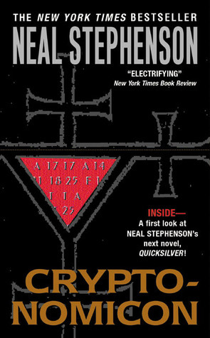

Cryptonomicon
⭐️⭐️⭐️⭐️
Format: audio (42 hours 44 minutes)
What an enjoyable book! Multiple, seemingly disparate, stories are told revolving around a mix of WWII and modern-day Philippines, England, and the United States. A marine, a cryptanalyst, a computer nerd each on their own storyline. It was a twisting story, which felt like it tucked when I expected it to roll, went left when I thought it'd go right. Combine the wit, humor, creative story telling method, and the story itself, and you hvae a story that I thoroughly enjoyed.
Some of the points were a bit nerdy in their explanation about cryptography, but I still found it interesting. It's been a while since I've literally laughed out loud in the middle of the book as much as I did for this. One of the characters in particular was right up my mental alley - the tangents that seem to be unrelated, yet totally related at the same time. Clearly the author is an extremely intelligent and witty person. One other note of dissent from the book was the language - maybe I'm an extremist with the amount (or lack) of cussing I do, but this felt like it had a higher-than-average cussing-to-not-cussing ratio.
Lastly, the audiobook was particularly enjoyable, as the performer did a great job speaking (at least how I imagined) how the characters would have. Great emotion, and story-telling ability. One of the better voice actors I've listened to.
- Previously: Twilight
- Next: The Gunslinger